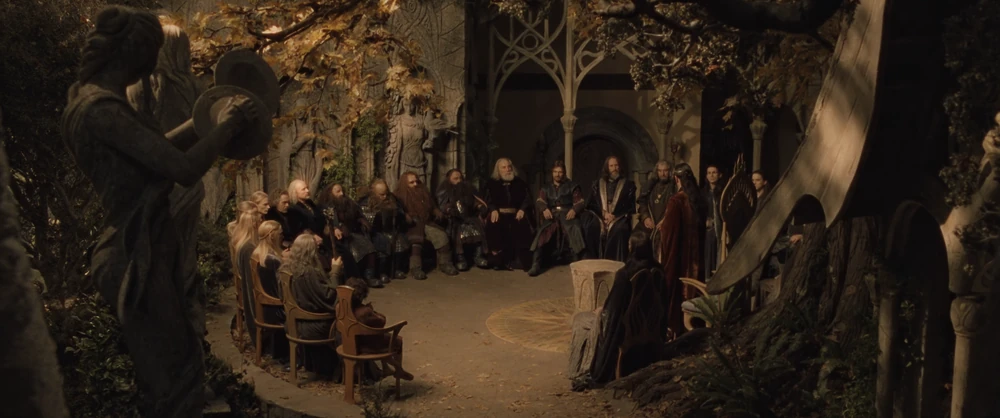

A facilitator for group decisions.
"Design an AI agent that serves a whole room instead of a single user — one that sits inside a live group conversation, holds everyone's interests at once, and helps them reach a decision the group actually owns, without deciding for them. Walk us through the rationale, and show a working prototype."
presentation/assets/zendaya-athena.webpTo end a cycle of blood-vengeance, Aeschylus didn't reach for a warrior or a king — he reached for Athena, goddess of wisdom. In the Oresteia (458 BCE) she convenes the first trial, replaces private revenge with reasoned judgment, and wins over even the losing side (the vengeful Furies become the Eumenides).
Helping people resolve conflict and reach agreement is a deep form of intelligence — the ancients counted it among the highest. For millennia that wisdom was uniquely human. A model with deep social intelligence is the first non-human that could practice it.
Aeschylus, Eumenides (the Oresteia), 458 BCE. Image: Zendaya as Athena in Christopher Nolan's The Odyssey (2026) — © Universal Pictures, used for illustration.
The role is ancient; the profession is young. Over the last ~80 years it's been formalized into a real practice — a neutral process-holder with named, teachable techniques.
Kurt Lewin · MIT & NTL
Founded group dynamics & the T-group.
To rebuild democratic groups and ease intergroup conflict after WWII.
Mediation & the caucus · labor & community mediators
Codified in Moore's Mediation Process: a private caucus surfaces what won't be said at the table.
To settle disputes without the courts — and without wrecking the relationship.
Getting to Yes · Fisher & Ury, Harvard Negotiation Project
Principled negotiation: interests, not positions.
A fix for win-lose positional bargaining.
Kaner's Diamond · Sam Kaner, Community At Work
Groups pass through the "groan zone" to reach real buy-in.
Genuine consensus over false or imposed agreement.
Lewin & NTL, T-groups (1947); Christopher Moore, The Mediation Process (1986); Fisher & Ury, Getting to Yes, Harvard Negotiation Project (1981); Sam Kaner et al., Facilitator's Guide to Participatory Decision-Making, Community At Work (1996).
It reads the room, holds a private 1:1 with each person, and brokers a decision everyone endorses.
The caucus is a private conversation a facilitator has with each participant. It surfaces the preferences people won't say publicly — which Iris folds into its public suggestions.
→ Iris's private sidebar
Theory of mind. Iris keeps a private model of each participant's mind — grounded in belief–desire–intention. For each person she tracks the interest under their position (desire), what they're advocating (stance), what they assume (beliefs), and how they regard the others — updated as everyone speaks.
→ Iris's sealed model of each person
Caucus — a core mediation technique (ABA; Beyond Intractability). Theory of mind — belief–desire–intention (Bratman 1987; Rao & Georgeff 1995); interests vs. positions (Fisher & Ury, Getting to Yes, 1981).
Iris is a product and a substrate. The same multi-principal engine behind the consumer app and the enterprise bot ships as a developer SDK: embed Iris in your own product, bring your own UI, and build any collaboration agent on its primitives.
Consumer — WhatsApp, for friend groups & plans.
Enterprise — Slack, for teams putting decisions on the record.
Developer — the SDK: embed Iris, bring your own UI, build any collaboration agent.
→ the collaboration engine, exposed
Sealed per-person memory, the de-identified Canvas, and the caucus loop come built in — swap the surface + policy and the same class is a standup bot or a vote.
A decision Iris handed down would be complied with, not owned — and the moment circumstances shift, it unravels. Facilitation isn't the polite option; it's the mechanism that makes a decision both better and durable. Two separate bodies of research say why.
Groups rehash what everyone already shares and fail to surface what only one person knows. In "hidden-profile" studies, groups are ~8× less likely to reach the right answer than if all facts were pooled (Stasser & Titus, 1985). Drawing out private information and dissent is what raises quality — precisely the caucus's job.
Given real voice in a process they trust, people accept and implement an outcome as their own — even an unfavorable one — so compliance is self-regulatory (procedural justice; Tyler & Lind). The evidence is longitudinal: at 12-year follow-up, mediated agreements show higher compliance and cooperation than litigated ones (Emery).
So Iris's job is to run the fair process — surface what's unsaid, give everyone voice, broker an option the group can own.
For every participant, Iris builds an evolving, sealed model of their mind — grounded in belief–desire–intention — revised each time they speak. It never leaves memory; only de-identified constraints reach the room. And she keeps her read of them separate from her plan for them.
Theory of mind — my read of their mind:
interest (desire) · position (stance) · beliefs (what they assume) · arc (disposition) · regards (how they see the others)
My confidence — how sure I am (hunch → confirmed). Mine, not a fact about them.
My plan — what I'm watching for + how I can help next. My agency, not their mind.
→ built from scratch, revised as they speak
Theory of mind — belief–desire–intention (Bratman 1987; Rao & Georgeff 1995); interests vs. positions (Fisher & Ury, 1981). Evolving per-peer models inspired by Honcho, Letta, and Generative Agents.
Elves, dwarves, men — ancient grudges, loud voices, and one small overlooked voice (Frodo). The Council reaches the right answer, but only by luck and exhaustion.

presentation/assets/council-of-elrond.webp